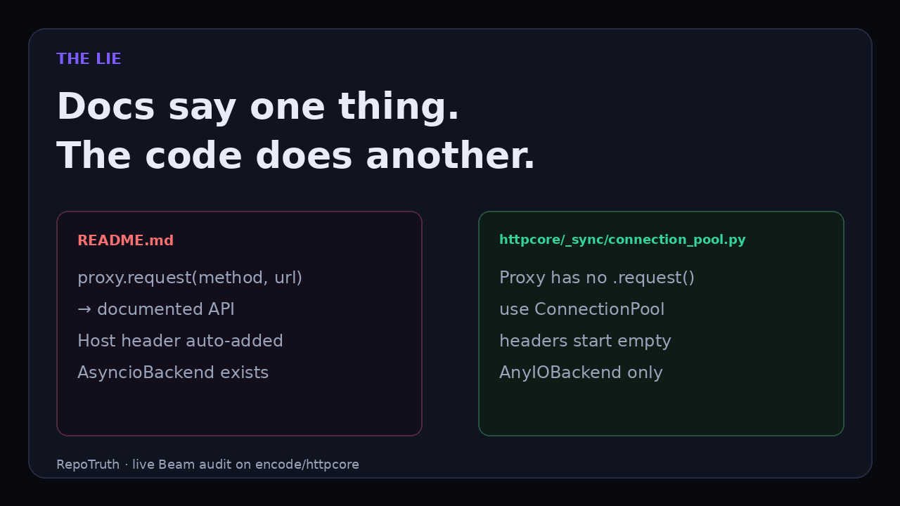
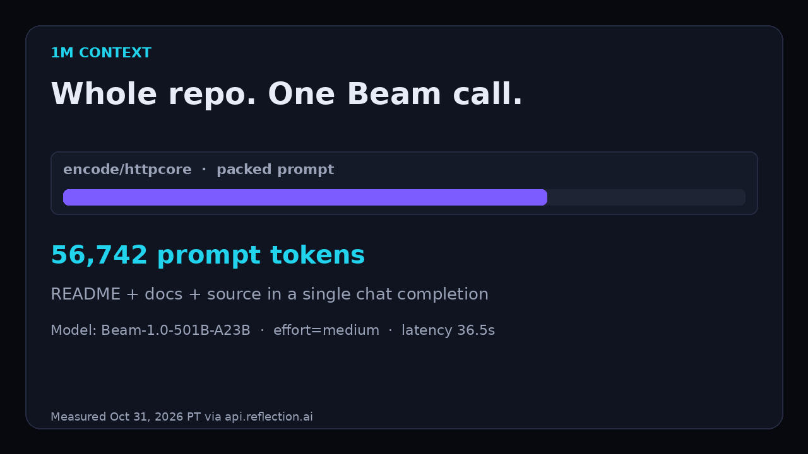
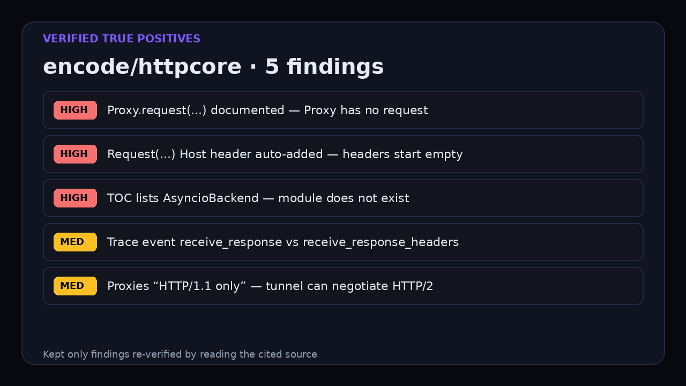
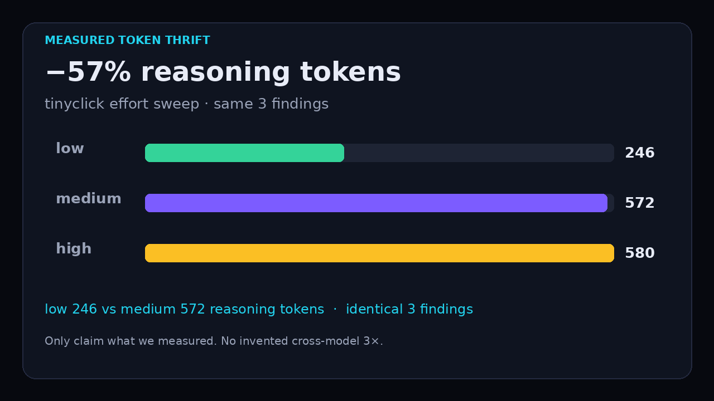
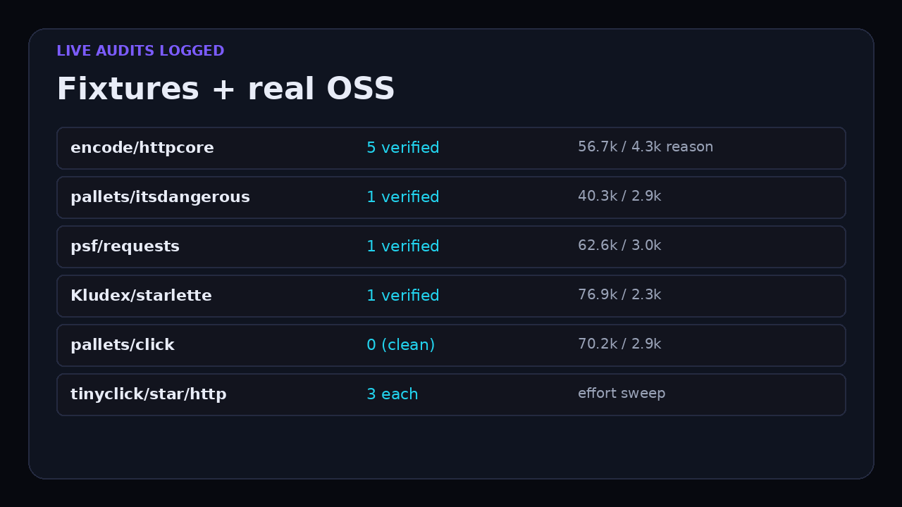
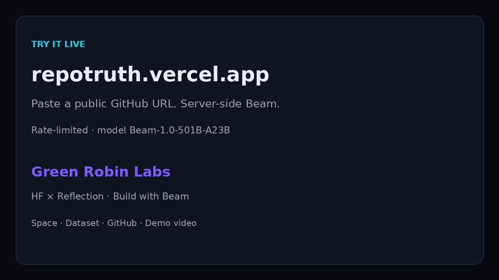

Hook
Documentation that lies.

RepoTruth · Build with Beam · LIVE
1M context
Whole repo. One Beam call.

RepoTruth · Build with Beam · LIVE
Findings
Cite the file. Cite the line.

RepoTruth · Build with Beam · LIVE
Thrift meter
−57% reasoning tokens.

RepoTruth · Build with Beam · LIVE
Live audits
Fixtures + real OSS.

RepoTruth · Build with Beam · LIVE
CTA
RepoTruth · Green Robin Labs

RepoTruth · Build with Beam · LIVE